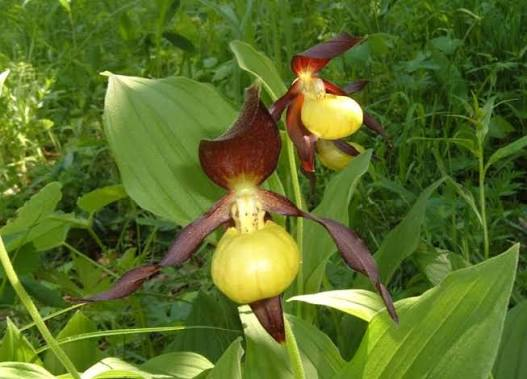
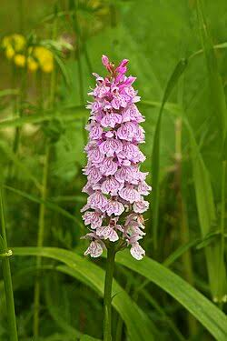

Laleaua pestriță
Fritillaria meleagris - Specie rară protejată, întâlnită în pajiștile umede.

Papucul doamnei
Cypripedium calceolus - Orhidee sălbatică rară din zonele împădurite calcaroase.

Roua cerului
Drosera rotundifolia - Plantă insectivoră prezentă în turbăriile montane (ex. Valea Izbucelor).

Clopoței
Campanula persicifolia - Specie frecventă la liziera pădurilor din Pădurea Craiului.

Poroinic
Orchis morio - Orhidee de pajiște răspândită în fânețele din depresiune.

Narcisa sălbatică
Narcissus poeticus - Întâlnită în poienile naturale din zona Bihorului.